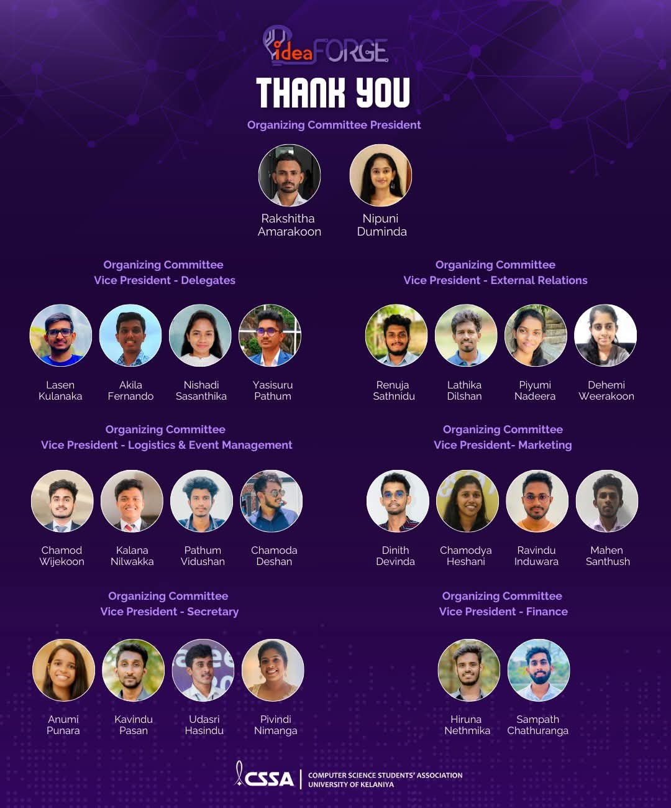
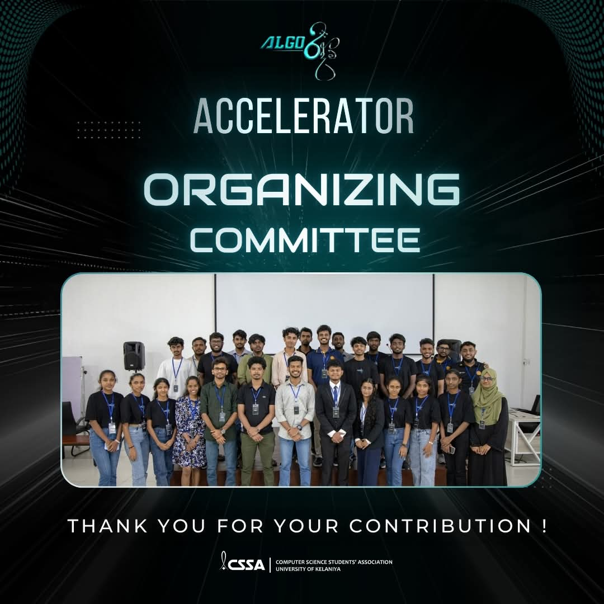
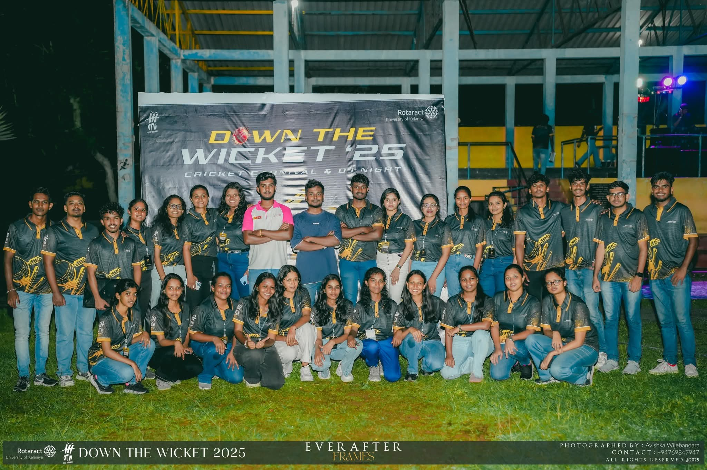
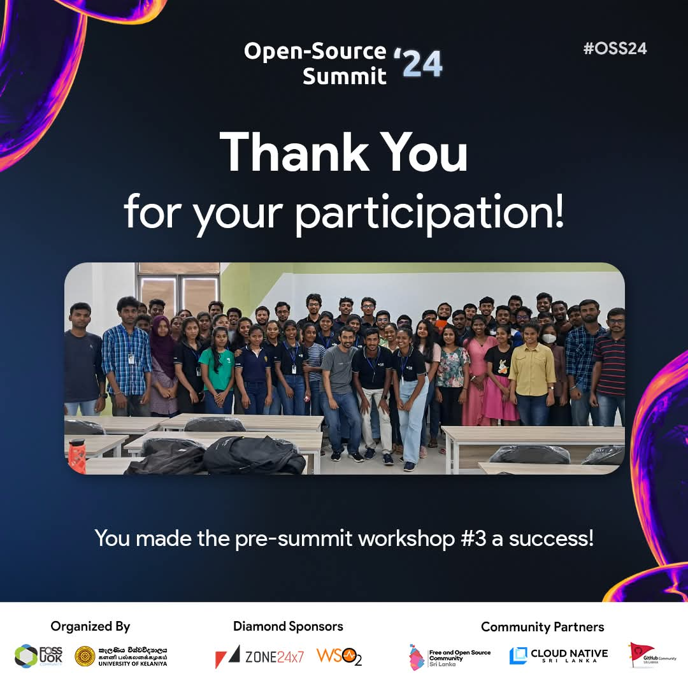
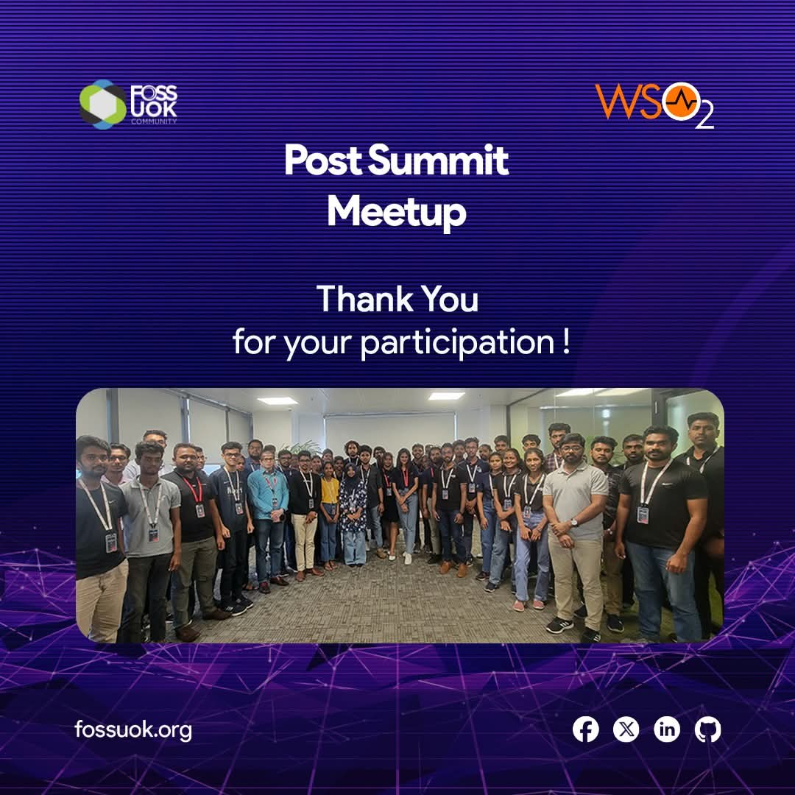
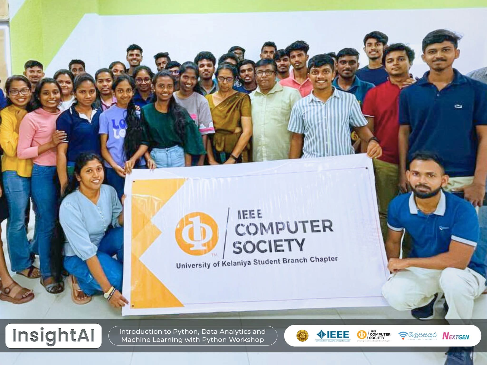
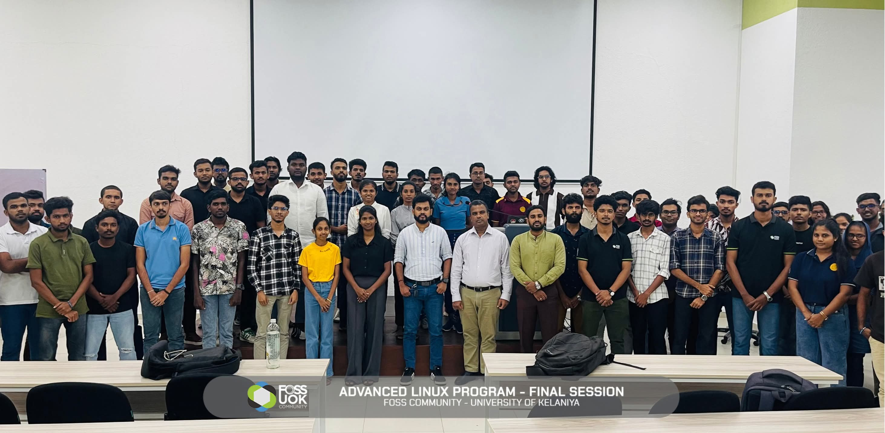
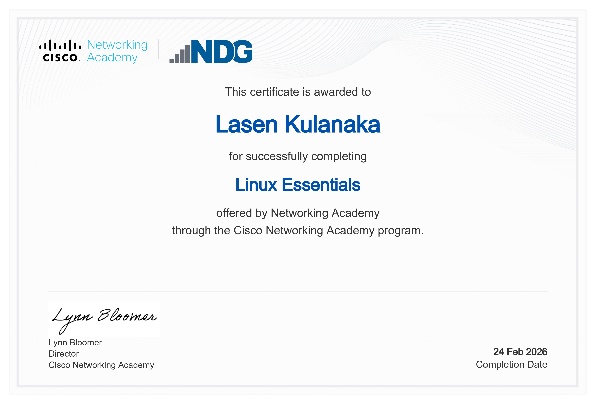
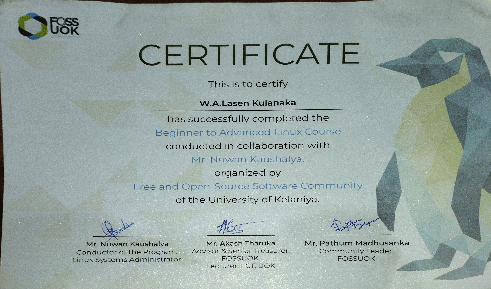

Student Number: CS/2021/013
BSc (Hons) in Computer Science specialized in Artificial Intelligence
Faculty of Computing & Technology | University of Kelaniya
I am an undergraduate student who is passionate about technology and enjoy learning how it can be used in everyday life. During my studies, I am building my knowledge in areas like programming, networking and databases. I like working on small projects and trying new tools to improve my skills step by step. I am always curious and willing to learn new things. My goal is to build a successful career in the IT field and use my knowledge to create useful and meaningful solutions.
I completed my school education at G/St.Aloysius College with a focus on mathematics and IT. Currently, I am following a degree in Computer Science specialized in Artificial Intelligence, where I am learning both theoretical and practical aspects of computing.
As for hobbies, I like programming and web developing, exploring artificial intelligence and robots. For relaxation, I prefer to watch videos about technology, listen to music and watch movies.
My goal is to become a skilled IT professional and work in the software or technology industry specially in the AI & Robotics field. I hope to continue learning and eventually contribute to meaningful projects.
I value honesty, hard work and continuous learning. I believe in helping others, staying positive and always doing my best in everything I do.
Machine Learning
Objective : Aim of this project was to develop a data driven system capable of predicting vehicle prices based on key dataset attributes such as Brand, Year of Manufacture and Mileage.
Tools : Python, HTML, CSS, Machine Learning
Description : A web application that leverages a trained machine learning model to estimate vehicle prices from a dataset which is available in kaggle.com website. This system integrates a backend predictive model with a web interface to allow seamless data input and result visualization.
Role : Entire project from model building to deploying the system had done by myself.
Outcomes : Successfully engineered a prediction model capable of handling high cardinality data and deployed it through a functional, interactive web interface.
2nd year Group Project
Objective : Aim of this project is to cenralize and streamline university event management using AI for personalized notifications and smart querying.
Tools: React.js, Node.js, Express.js, MongoDB, Python, Gemini API(RAG), Tailwind CSS, Render.com
Description : This platform is a centralized, AI-enhanced event publication system designed to eliminate campus communication clutter. This platform features tailored notifications based on student preferences, real time sentiment analysis for event feedback and a smart chatbot that provides instant answers to event related queries, all managed securely by administrators.
Role : My role in this project was to develop a secure user authentication system (login/signup) and I have contributed to some data collection efforts required for the platform's machine learning features.
Outcomes :
Ideaforge 2024 is a mini hackathon organized by CSSA, where teams were required to develop innovative solutions for real world problems within a limited timeframe which means participants should have knowledge about idea generation, concept development and collaborative discussions throughout the competition.
Role : Delegates Team Member
Contributions :
Skills Developed :

Accelerator is a panel discussion organized by CSSA with industry experts, aimed at sharing insights on industry trends, career paths and professional experiences, along with an interactive Q&A session for students.
Role : Finance Team Member
Contributions :
Skills Developed :

Down The Wicket 2025 is a cricket tournament organized by the Rotaract Club of University of Kelaniya to promote teamwork, sportsmanship while ensuring smooth coordination of matches and event activities. It was opened to cricket teams of different areas in the country.
Role : Logistic Team Member
Contributions :
Skills Developed :

FOSS Community, University of Kelaniya
Date : 2024.04.27
Type : Workshop
Under Open Source Developer Summit 2024-Pre Summit Workshop organized by FOSS Community, University of Kelaniya I had participated to one of its hands-on workshop on automating development workflows using GitHub Actions, which helped participants understand how to streamline coding and deployment processes. Workshop was held at Faculty of Computing & Technology, University of Kelaniya premises.
Key Learnings :

FOSS Community, University of Kelaniya
Date : 2024.10.09
Type : Workshop
Under Open Source Developer Summit 2024-Post Summit Workshop organized by FOSS Community, University of Kelaniya I had participated to a session focused on open source identity management, API integration and security, highlighting how these components work together in modern applications. Workshop was held at WS02 premises.
Key Learnings :

IEEE Computer Society, University of Kelaniya
Date : 2024.04.08 - 2024.04.09
Type : Workshop
InsightAI was a two day program introducing Python, data analytics and machine learning, combining concept explanations with hands-on activities to build practical understanding. It was organized by IEEE Computer Society, University of Kelaniya. Session was held at Faculty of Computing & Technology, University of Kelaniya premises.
Key Learnings :

FOSS Community, University of Kelaniya
Date : 2025.09.06 - 2025.11.14
Type : Workshop
This program was a structured workshop series focused on building advanced Linux skills through practical sessions and applied learning activities conducted by Mr.Nuwan Kaushalya which is organized by FOSS Community, University of Kelaniya. It was held at Faculty of Computing & Technology, University of Kelaniya premises.
Key Learnings :

Online Certification - Cisco Networking Academy
Gained a good grasp on Linux basics such as system architecture, command-line, file and process handling and basic concepts related to security. Learned to work efficiently within the Linux environment.

Competency Certification - By Mr.Nuwan Kaushalya in collaboration with FOSS Community, University of Kelaniya
Acquired in depth knowledge of Linux system administration, shell scripting, package management and networking basics, with hands on practice using real world scenarios and command line tools.

During my university studies in 2nd year, I participated in a group project where we
developed an AI-Assisted Faculty Event Publication and Notification System. My main
responsibility in this project was designing and implementing a secure authentication system for
user login and signup. This allowed me to apply my knowledge of programming and system design in
a practical context.
Through this experience, I learned the importance of secure system development, especially when
handling user data. I also gained a better understanding of how different components of a system
must work together smoothly. Working as part of a team helped me improve my communication and
collaboration skills as we needed to regularly discuss progress and coordinate our work.
One challenge we faced was integrating the authentication system with other parts of the
project. Since different team members were working on different modules, there were issues with
compatibility and system flow. Initially, this caused delays and confusion within the team. To
overcome this, we held group discussions, clearly divided responsibilities and tested each part
of the system step by step. This helped us identify errors early and ensure that the system
functioned correctly.
In the future, I would like to improve my ability to coordinate more effectively within a team
and take a more active role in integrating different components of a project. I also aim to
enhance my knowledge of secure system design and testing techniques to develop more reliable
applications.
I had the opportunity to participate as a organizing committee member in IdeaForge, a mini
hackathon organized by CSSA. This event focused on developing innovative solutions for a given
problem statement within a limited time. I was part of the delegates team in the organizing
committee, where my main responsibility was communicating with participants and supporting them
throughout the event. I also contributed to assisting the finance team in sponsorship related
activities.
This experience helped me understand how events are managed in a fast paced environment. I
learned the importance of clear communication, quick decision making and teamwork when handling
multiple responsibilities. It also improved my ability to interact with different participants
and address their concerns effectively.
One of the main challenges I faced was managing multiple participant queries at the same time
while also supporting other organizing tasks. Since the event required quick responses, it was
sometimes difficult to balance accuracy and speed. To overcome this, I focused on prioritizing
tasks, communicating clearly and working closely with my team members to ensure that all issues
were handled efficiently.
Overall, this experience improved my confidence in handling responsibilities under pressure and
strengthened my communication and coordination skills. In the future, I would like to further
improve my ability to manage time effectively and handle multiple tasks more efficiently in high
pressure situations.
Another valuable experience I gained during my university life was being part of the logistics
team for Down The Wicket 2025, a cricket tournament organized by the Rotaract Club of the
University of Kelaniya. My responsibilities included arranging food supplies, purchasing
trophies and addressing any shortages or issues that arose during the event.
Through this experience, I learned how important proper planning and coordination are in
organizing large scale events. It gave me practical exposure to managing resources and working
with a team to ensure the smooth execution of an event. I also improved my ability to think
quickly and make decisions under pressure.
One of the major challenges we faced was managing the event within a tight budget, especially
when arranging food and trophies. In addition, there were some last minute shortages and
unexpected changes on the event day, which required immediate attention. To overcome these
challenges, I worked with my team to find alternative solutions, prioritize essential
requirements and ensure that the event continued without major disruptions.
This experience helped me develop my problem solving, teamwork and time management skills. In
the future, I would like to improve my planning by preparing backup options in advance and
organizing resources more efficiently to handle unexpected situations more effectively.
Throughout my university studies, I had opportunities to improve my communication skills through
the DELT module. One such experience was delivering an impromptu speech, where I had to speak on
a randomly given topic within a few minutes of preparation. One of the topics I received was
“You Are Your Only Competition.”
Initially, I felt nervous because I had very little time to prepare and organize my ideas.
Speaking in front of others without prior preparation was challenging and it affected my
confidence at the beginning. However, I learned how to quickly structure my thoughts by focusing
on key points and delivering them in a clear and simple manner.
The feedback I received for my performance was average, which helped me understand that there is
still room for improvement. However, the experience itself helped me become more comfortable
with speaking in front of an audience and thinking under pressure.
Over time, my confidence improved as I continued to participate in similar activities. I learned
that regular practice and preparation are important in overcoming nervousness. In the future, I
aim to improve my fluency, confidence and ability to express ideas more effectively, especially
in spontaneous speaking situations.